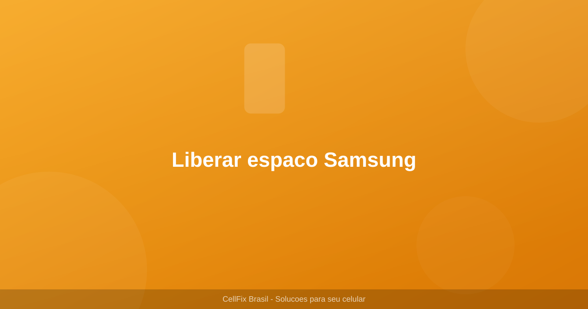

Como liberar espaco no celular Samsung sem apagar fotos — guia completo 2026ções que funcionam

Se o seu celular Samsung esta ficando sem espaco e voce nao quer apagar suas fotos, este guia e para voce. Muitas pessoas hesitam em liberar espaco no celular porque tem medo de perder memorias preciosas. A boa noticia e que existem varias formas de ganhar espaco sem tocar nas suas fotos.
Neste guia completo, vamos mostrar 6 metodos testados para liberar espaco no celular Samsung, incluindo passo a passo detalhado, tabelas comparativas e dicas que vao transformar o desempenho do seu aparelho.
Como saber quanto espaco seu Samsung tem
Antes de comecar a liberar espaco, e importante saber exatamente quanto espaco esta disponivel e o que esta ocupando mais memoria.
- Passo 1: Abra os Ajustes do seu Samsung
- Passo 2: Toque em Cuidados com o aparelho e bateria
- Passo 3: Toque em Armazenamento
- Passo 4: Veja o percentual de espaco usado e os tipos de arquivos que mais ocupam memoria
Os categorias que mais ocupam espaco geralmente sao: aplicativos, imagens, videos e arquivos de cache. A analise detalhada vai ajudar voce a priorizar o que limpar primeiro.
Metodo 1: Limpe o cache dos aplicativos
O cache sao arquivos temporarios que os apps criam para funcionar mais rapido. Com o tempo, esse cache pode ocupar gigabytes de espaco. Limpar o cache e seguro e nao apaga seus dados pessoais.
- Passo 1: Acesse Ajustes > Aplicativos
- Passo 2: Selecione o aplicativo que deseja limpar
- Passo 3: Toque em Armazenamento
- Passo 4: Toque em Limpar cache
- Passo 5: Repita para outros aplicativos que ocupam muito espaco
Metodo 2: Mova fotos e videos para a nuvem
Em vez de apagar suas fotos, mova-as para a nuvem. O Google Fotos oferece 15GB gratuitos e o Samsung Cloud oferece espaco para seus backups. Depois de mover para a nuvem, voce pode apagar as fotos do armazenamento local.
- Passo 1: Abra o Google Fotos
- Passo 2: Toque no seu perfil e ative o Backup
- Passo 3: Aguarde todas as fotos serem enviadas para a nuvem
- Passo 4: Apos o backup completo, volte ao app Galeria
- Passo 5: Selecione as fotos ja salvas na nuvem e delete do dispositivo
Metodo 3: Delete mensagens antigas do WhatsApp
O WhatsApp e o maior consumidor de espaco no celular de muitos brasileiros. Fotos, videos e audios enviados e recebidos ocupam cada vez mais memoria.
- Passo 1: Abra o WhatsApp
- Passo 2: Va em Ajustes > Armazenamento e dados
- Passo 3: Toque em Gerenciar armazenamento
- Passo 4: Veja quais conversas mais ocupam espaco
- Passo 5: Selecione as conversas e delete arquivos medios indesejados
Metodo 4: Desinstale apps que voce nao usa
Muitos aplicativos sao instalados e esquecidos, ocupando espaco valioso. Verifique seus apps e desinstale os que nao utiliza mais.
- Passo 1: Acesse Ajustes > Aplicativos
- Passo 2: Ordene por Tamanho para ver os maiores apps primeiro
- Passo 3: Identifique apps que voce nao usa ha mais de 30 dias
- Passo 4: Selecione cada app e toque em Desinstalar
- Passo 5: Considere usar versoes lite dos apps quando disponivel
Metodo 5: Use um cartao SD
Se o seu Samsung tem slot para cartao SD, essa e a melhor solucao para expandir o armazenamento. Cartoes SD sao baratos e oferecem muito mais espaco.
- Passo 1: Compre um cartao SD de boa marca com pelo menos 128GB
- Passo 2: Insira o cartao SD no slot do celular
- Passo 3: Na notificacao, selecione Usar como armazenamento portatil
- Passo 4: Mova fotos, videos e musicas para o cartao SD
- Passo 5: Configure o app Camera para salvar fotos diretamente no SD
Metodo 6: Use a ferramenta de limpeza do Samsung
O Samsung possui uma ferramenta nativa de limpeza chamada Cuidados com o Aparelho que identifica e remove arquivos desnecessarios automaticamente.
- Passo 1: Acesse Ajustes > Cuidados com o aparelho e bateria
- Passo 2: Toque em Armazenamento
- Passo 3: Toque em Limpar agora
- Passo 4: Selecione os tipos de arquivos que deseja remover
- Passo 5: Confirme a limpeza e aguarde a conclusao
Tabela: Comparacao dos metodos de limpeza
| Metodo | Espaco recuperavel | Dificuldade | Risco de perda |
|---|---|---|---|
| Limpar cache | 500MB - 5GB | Facil | Nenhum |
| Mover fotos para nuvem | 5GB - 50GB | Media | Baixo (com backup) |
| Deletar WhatsApp antigo | 1GB - 20GB | Facil | Medio |
| Desinstalar apps | 100MB - 10GB | Facil | Baixo |
| Cartao SD | 32GB - 1TB | Facil | Nenhum |
| Ferramenta Samsung | 500MB - 3GB | Facil | Nenhum |
Perguntas Frequentes
Limpar cache apaga minhas fotos ou mensagens?
Nao. Limpar cache apenas remove arquivos temporarios dos aplicativos. Suas fotos, mensagens e dados pessoais permanecem intactos. O cache e reconstruido automaticamente quando voce usa o app novamente.
Quanto espaco o Google Fotos oferece gratis?
O Google Fotos oferece 15GB de armazenamento gratuito, compartilhados com Google Drive e Gmail. Para mais espaco, voce pode assinar o Google One a partir de R$ 6,99/mes por 100GB.
Posso usar cartao SD de 512GB em qualquer Samsung?
Nao. Verifique a especificacao do seu modelo para saber o suporte maximo. A maioria dos Samsung suporta ate 1TB, mas modelos mais antigos podem limitar a 256GB ou 512GB.
Desinstalar apps apaga os dados salvos?
Depende. Apps com conta (como Instagram e Facebook) mantem seus dados na nuvem. Ao reinstalar, seus dados serao restaurados. Apps sem conta podem perder dados locais ao serem desinstalados.
Como evitar que o celular fique cheio novamente?
Configure backup automatico no Google Fotos, limpe o cache dos apps uma vez por mes, desinstale apps inuteis regularmente e configure o WhatsApp para nao baixar midias automaticamente de todos os grupos.
A ferramenta de limpenha do Samsung e segura?
Sim, a ferramenta nativa do Samsung e completamente segura. Ela remove apenas arquivos temporarios, logs do sistema e arquivos de cache que nao afetam o funcionamento dos seus aplicativos.